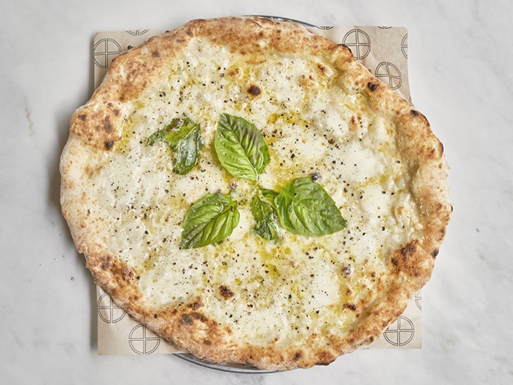

Your craving Cacio e Pepe Pizza? Well, you came to the right place!
Here's the recipe:
Ingredients:
- For the dough:
- 3 grams dry yeast
- 400 grams lukewarm water
- 20 grams salt
- 600 grams flour
- For toppings (per pizza):
- 70 grams of Pecorino Romano
- Extra-virgin olive oil, for drizzling
- Basil leaves
- Black pepper, to taste
- 80 grams of mozzarella di bufala
Method:
- Make the dough:
In a bowl, add 2 tablespoons of the water
to the yeast until the yeast dissolves. Set aside.
Dissolve the salt
in the remaining water and mix for 1 minute. Mix the flour with
the salt water for 3 minutes.
Add the dissolved yeast and
continue to mix, kneading the dough with your hands, for another
3 minutes. Let the
dough rest in a container for 3 hours, covered,
before rolling the dough into 4 balls of equal size. Cover with a
wet
towel or tight plastic wrap to preserve humidity and
allow the balls to rise for 5 hours.
- Prepare the pizza stone:
Set the oven to its maximum temperature, ideally 550˚F,
and place the pizza stone inside. Let it saturate with heat
for at least 1 hour.
- Assemble the pizza:
Stretch a ball of dough out to a 12-inch round. Add the
Pecorino, basil, pepper, and drizzle with some extra-virgin
olive oil. Cook in the oven for 2 minutes, then add the
mozzarella and cook for an extra minute. Serve immediately.
